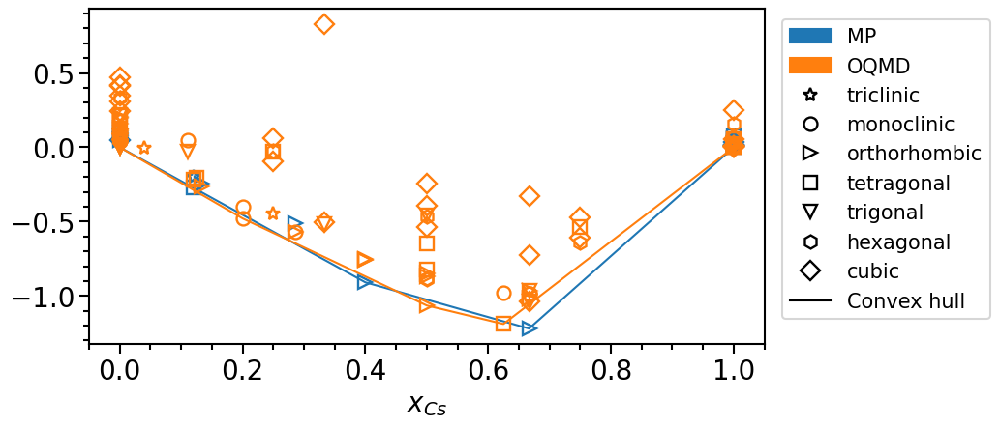
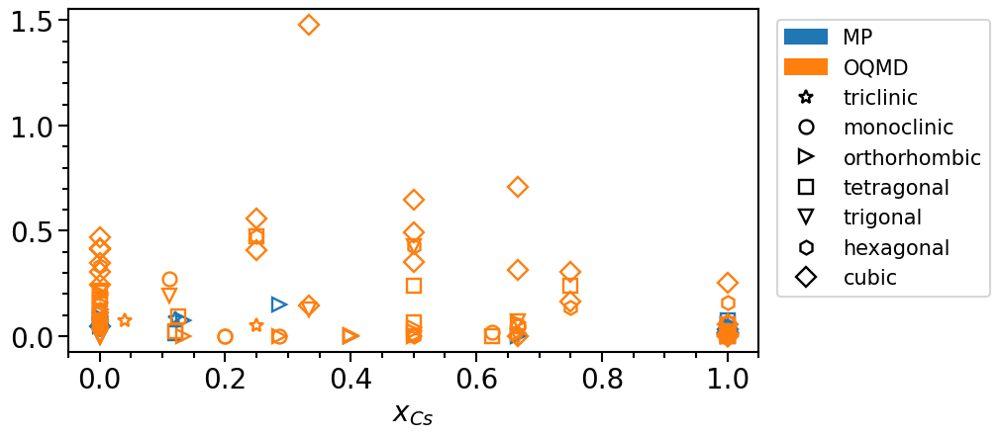
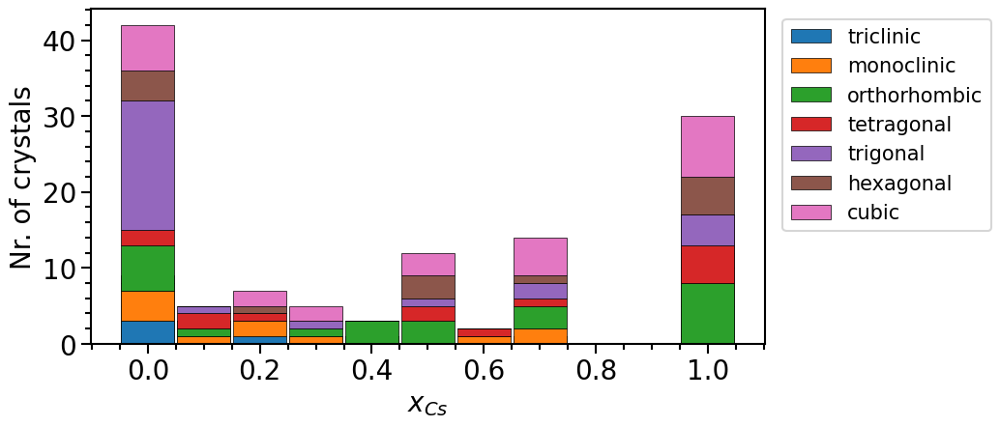
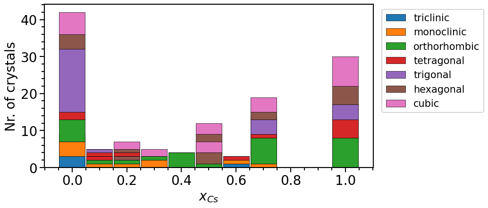

Querying the structure pool for the Cs-Te binary system¶
This example is reproducing the steps to create the initial structure pool for the high-throughput calculations published here: doi:10.1063/5.0082710.
As an initial data pool of crystal structures we use the Materials Project (MP) database and the Open Quantum Materials database (OQMD) that can be readily interfaced using the StructureImporter class of the library:
[1]:
from aim2dat.strct import StructureImporter
strct_imp = StructureImporter()
Querying crystals from Materials Project and Open Quantum Materials Database¶
The first argument for the queries consists of the chemical compositions specified via the string 'Cs-Te'.
As for the MP database we query the initial structures (specified via the keyword structure_type) since these structures still have all symmetries. Additionally, an individual API key has to be passed to the function which can be requested at the MP webpage.
[2]:
import os
strct_imp.import_from_mp(
"Cs-Te", os.environ["MP_OPENAPI_KEY"], structure_type="initial",
)
[2]:
<aim2dat.strct.structure_collection.StructureCollection at 0x7f7dad2f8f50>
[3]:
strct_imp.import_from_oqmd("Cs-Te", query_limit=1000)
[3]:
<aim2dat.strct.structure_collection.StructureCollection at 0x7f7dad4b23f0>
The downloaded crystals are stored in a StructureCollection object which can be accessed via the structures property. We can check the number of imported structures via len or by printing the object:
[4]:
len(strct_imp.structures)
[4]:
162
[5]:
print(strct_imp)
----------------------------------------------------------------------
------------------------ Structure Collection ------------------------
----------------------------------------------------------------------
Imported from: mp_openapi
- Number of structures: 37
- Elements: Cs-Te
Imported from: oqmd
- Number of structures: 125
- Elements: Cs-Te
----------------------------------------------------------------------
Chemical element constraints
Neglecting elemental structures: False
Chemical formula constraints
Not set.
Attribute constraints
Not set.
----------------------------------------------------------------------
Since we have been querying data from two different databases we might also want to check whether there are crystals shared by both databases. In this case we use the F-fingerprint (doi:10.1063/1.3079326) to identify duplicate structures. The function to indentify duplicate structures is implemented in the StructureOperations class.
We can simply pass the StructureCollection](aiida_scripts.structure_analysis.StructureCollection) object from the StructureImporter to the StructureOperations object upon initialization:
[6]:
from aim2dat.strct import StructureOperations
strct_op = StructureOperations(structures=strct_imp.structures)
strct_op.n_procs = 2
strct_op.cunksize = 500
strct_op.verbose = False
We use the find_duplicates_via_ffingerprint function to identify duplicate crystals, the function returns the labels of duplicate pairs and removes the first member of the pair from the StructureCollection object if remove_structures is set to True:
[7]:
strct_op.find_duplicates_via_ffingerprint(
remove_structures=True,
threshold=0.001,
r_max=15.0,
delta_bin=0.005,
sigma=10.0
)
[7]:
[('OQMD_676192', 'mp_mp-1055940'),
('OQMD_676503', 'mp_mp-1055940'),
('OQMD_676504', 'mp_mp-1055940'),
('mp_mp-2766462', 'mp_mp-1191593'),
('OQMD_621965', 'OQMD_620946'),
('OQMD_677954', 'OQMD_676288'),
('OQMD_1280348', 'OQMD_1215022'),
('OQMD_690486', 'OQMD_676083'),
('OQMD_675565', 'OQMD_675564'),
('OQMD_676082', 'OQMD_686178')]
Once again we can check the final number of structures:
[8]:
len(strct_op.structures)
[8]:
152
Analysing the initial dataset¶
Having the duplicate structures removed we can split the dataset based on the crystal’s source database:
[9]:
structures_mp = strct_op.structures[:32]
structures_oqmd = strct_op.structures[32:]
We can get a better overview of on the crystals by exporting the data into a pandas dataframe for better visualization:
[10]:
df_mp = structures_mp.to_pandas_df(
exclude_columns=["functional", "icsd_ids", "magnetic_moment", "direct_band_gap"]
)
df_mp
[10]:
| label | structure | el_conc_Cs | el_conc_Te | nr_atoms | nr_atoms_Cs | nr_atoms_Te | source | source_id | space_group | theoretical | band_gap (eV) | formation_energy (eV/atom) | stability (eV/atom) | |
|---|---|---|---|---|---|---|---|---|---|---|---|---|---|---|
| 0 | mp_mp-1096915 | [(Cs, (0.0, 1.287468, 2.2069435))] | 1.000000 | 0.000000 | 1 | 1 | 0 | MP_2025.09.25 | mp-1096915 | 12 | False | 0.0000 | 0.042208 | 0.042208 |
| 1 | mp_mp-672241 | [(Cs, (0.0, 2.7780620000000003, 4.8795)), (Cs,... | 1.000000 | 0.000000 | 8 | 8 | 0 | MP_2025.09.25 | mp-672241 | 135 | False | 0.0000 | 0.027480 | 0.027480 |
| 2 | mp_mp-1183694 | [(Cs, (3.590299173631, 6.071433102343, 1.84203... | 1.000000 | 0.000000 | 8 | 8 | 0 | MP_2025.09.25 | mp-1183694 | 139 | True | 0.0000 | 0.019630 | 0.019630 |
| 3 | mp_mp-1949606 | [(Cs, (4.15156123242, 7.020565051194001, 2.724... | 1.000000 | 0.000000 | 8 | 8 | 0 | MP_2025.09.25 | mp-1949606 | 139 | True | 0.0000 | 0.000000 | 0.000000 |
| 4 | mp_mp-2739124 | [(Cs, (0.0, 1.34833, 2.2578075))] | 1.000000 | 0.000000 | 1 | 1 | 0 | MP_2025.09.25 | mp-2739124 | 139 | True | 0.0000 | 0.017217 | 0.017217 |
| 5 | mp_mp-3 | [(Cs, (2.574246999999999, 0.0, 4.6491155)), (C... | 1.000000 | 0.000000 | 2 | 2 | 0 | MP_2025.09.25 | mp-3 | 141 | False | 0.0000 | 0.074485 | 0.074485 |
| 6 | mp_mp-11832 | [(Cs, (2.7310305, 1.58964484595, 2.2308375)), ... | 1.000000 | 0.000000 | 2 | 2 | 0 | MP_2025.09.25 | mp-11832 | 194 | False | 0.0000 | 0.019878 | 0.019878 |
| 7 | mp_mp-639727 | [(Cs, (0.0, 0.0, 0.0)), (Cs, (2.66013525, 1.58... | 1.000000 | 0.000000 | 4 | 4 | 0 | MP_2025.09.25 | mp-639727 | 194 | False | 0.0000 | 0.019848 | 0.019848 |
| 8 | mp_mp-1183897 | [(Cs, (11.70355725, 9.409432645602, 0.62218785... | 1.000000 | 0.000000 | 20 | 20 | 0 | MP_2025.09.25 | mp-1183897 | 213 | True | 0.0000 | 0.013120 | 0.013120 |
| 9 | mp_mp-1184151 | [(Cs, (0.0, 0.0, 0.0)), (Cs, (-6.0112699945919... | 1.000000 | 0.000000 | 29 | 29 | 0 | MP_2025.09.25 | mp-1184151 | 217 | True | 0.1362 | 0.012575 | 0.012575 |
| 10 | mp_mp-949029 | [(Cs, (0.0, 2.4564485, 4.912897)), (Cs, (0.0, ... | 1.000000 | 0.000000 | 8 | 8 | 0 | MP_2025.09.25 | mp-949029 | 223 | True | 0.0000 | 0.032966 | 0.032966 |
| 11 | mp_mp-1055940 | [(Cs, (0.0, 0.0, 0.0))] | 1.000000 | 0.000000 | 1 | 1 | 0 | MP_2025.09.25 | mp-1055940 | 225 | False | 0.0000 | 0.009248 | 0.009248 |
| 12 | mp_mp-1 | [(Cs, (0.0, 0.0, 0.0))] | 1.000000 | 0.000000 | 1 | 1 | 0 | MP_2025.09.25 | mp-1 | 229 | False | 0.0000 | 0.019341 | 0.019341 |
| 13 | mp_mp-1012110 | [(Cs, (2.846375, 2.2771, 4.22025)), (Cs, (0.40... | 1.000000 | 0.000000 | 4 | 4 | 0 | MP_2025.09.25 | mp-1012110 | 57 | False | 0.0000 | 0.024368 | 0.024368 |
| 14 | mp_mp-1182809 | [(Cs, (3.915523908854999, 3.720907005254, 6.68... | 1.000000 | 0.000000 | 4 | 4 | 0 | MP_2025.09.25 | mp-1182809 | 57 | False | 0.0000 | 0.024276 | 0.024276 |
| 15 | mp_mp-1007976 | [(Cs, (-6.550889428094999, -6.17830575, -3.597... | 1.000000 | 0.000000 | 4 | 4 | 0 | MP_2025.09.25 | mp-1007976 | 62 | False | 0.0000 | 0.054917 | 0.054917 |
| 16 | mp_mp-573579 | [(Cs, (2.2694730075000003, 3.8378279535, 1.140... | 1.000000 | 0.000000 | 8 | 8 | 0 | MP_2025.09.25 | mp-573579 | 64 | False | 0.0000 | 0.053976 | 0.053976 |
| 17 | mp_mp-570459 | [(Te, (-0.04901986452399901, 2.450514285984, 3... | 0.000000 | 1.000000 | 3 | 0 | 3 | MP_2025.09.25 | mp-570459 | 12 | False | 0.0000 | 0.072546 | 0.072546 |
| 18 | mp_mp-19 | [(Te, (0.607012964992, -1.071237805289, 1.9859... | 0.000000 | 1.000000 | 3 | 0 | 3 | MP_2025.09.25 | mp-19 | 152 | False | 0.1856 | 0.000000 | 0.000000 |
| 19 | mp_mp-567313 | [(Te, (0.607245171135, 1.012054724774999, 1.98... | 0.000000 | 1.000000 | 3 | 0 | 3 | MP_2025.09.25 | mp-567313 | 154 | True | 0.5606 | 0.000982 | 0.000982 |
| 20 | mp_mp-1178932 | [(Te, (0.0, 0.0, 0.0))] | 0.000000 | 1.000000 | 1 | 0 | 1 | MP_2025.09.25 | mp-1178932 | 166 | True | 0.0000 | 0.054095 | 0.054095 |
| 21 | mp_mp-1064307 | [(Te, (0.738778479663, 4.175569044392, 0.91171... | 0.000000 | 1.000000 | 4 | 0 | 4 | MP_2025.09.25 | mp-1064307 | 18 | True | 0.0000 | 0.095802 | 0.095802 |
| 22 | mp_mp-10654 | [(Te, (1.599724, 1.5677295, 1.599403999999999))] | 0.000000 | 1.000000 | 1 | 0 | 1 | MP_2025.09.25 | mp-10654 | 221 | True | 0.0000 | 0.046552 | 0.046552 |
| 23 | mp_mp-1178952 | [(Te, (1.5653845, 2.586170188068, 6.8363801689... | 0.000000 | 1.000000 | 4 | 0 | 4 | MP_2025.09.25 | mp-1178952 | 26 | True | 0.0000 | 0.049136 | 0.049136 |
| 24 | mp_mp-105 | [(Te, (1.5861585, 2.385300681072, 6.88104225))... | 0.000000 | 1.000000 | 4 | 0 | 4 | MP_2025.09.25 | mp-105 | 51 | True | 0.0000 | 0.078497 | 0.078497 |
| 25 | mp_mp-9924 | [(Te, (1.530266999999999, 0.0, 0.0))] | 0.000000 | 1.000000 | 1 | 0 | 1 | MP_2025.09.25 | mp-9924 | 65 | True | 0.0000 | 0.127407 | 0.127407 |
| 26 | mp_mp-573763 | [(Cs, (4.437405, 4.545410331769999, 7.84072991... | 0.666667 | 0.333333 | 12 | 8 | 4 | MP_2025.09.25 | mp-573763 | 62 | False | 1.7740 | -1.220101 | 0.000000 |
| 27 | mp_mp-505464 | [(Cs, (6.5486504911850005, 3.52778, 11.7255905... | 0.133333 | 0.866667 | 60 | 8 | 52 | MP_2025.09.25 | mp-505464 | 57 | False | 0.7814 | -0.244504 | 0.074483 |
| 28 | mp_mp-505634 | [(Cs, (-1.591487185568, 6.460592765487999, 7.5... | 0.400000 | 0.600000 | 10 | 4 | 6 | MP_2025.09.25 | mp-505634 | 36 | False | 0.5258 | -0.908728 | 0.000000 |
| 29 | mp_mp-1104010 | [(Cs, (-4.8575800000000005, 0.878253243839999,... | 0.285714 | 0.714286 | 14 | 4 | 10 | MP_2025.09.25 | mp-1104010 | 63 | False | 0.3998 | -0.510823 | 0.152050 |
| 30 | mp_mp-1191593 | [(Cs, (-0.023478315353999003, -0.0105979987120... | 0.120000 | 0.880000 | 25 | 3 | 22 | MP_2025.09.25 | mp-1191593 | 87 | False | 0.0000 | -0.272576 | 0.014513 |
| 31 | mp_mp-620471 | [(Cs, (5.9977640259089995, 7.210484912015, 1.8... | 0.120000 | 0.880000 | 25 | 3 | 22 | MP_2025.09.25 | mp-620471 | 1 | True | 0.0000 | -0.200462 | 0.086626 |
[11]:
df_oqmd = structures_oqmd.to_pandas_df(
exclude_columns=["functional", "icsd_ids", "magnetic_moment", "direct_band_gap"]
)
The dataset can be analyzed in more detail using the PhasePlot object from the plot sub-package of the library:
[12]:
from aim2dat.plots import PhasePlot
Here we use the matplotlib-library to create the plots, interactive plots can also be generated by changing the backend to "plotly":
[13]:
phase_diagram = PhasePlot()
phase_diagram.ratio = (9, 4.5)
phase_diagram.show_crystal_system = True
phase_diagram.show_legend = True
phase_diagram.legend_bbox_to_anchor = (1.35, 1.0)
phase_diagram.backend = "matplotlib"
Chemical composition and formation energies can be readily parsed from the pandas data frames:
[14]:
phase_diagram.import_from_pandas_df("MP", df_mp)
phase_diagram.import_from_pandas_df("OQMD", df_oqmd)
[15]:
phase_diagram.plot_type = "scatter"
phase_diagram.plot_property = "formation_energy"
phase_diagram.plot(["MP", "OQMD"])
[15]:

The stability is defined as the vertical distance of a phase with respect to the convex hull:
[16]:
phase_diagram.plot_property = "stability"
phase_diagram.show_convex_hull = False
phase_diagram.plot(["MP", "OQMD"])
[16]:

To analyze the distribution of the phases in their chemical configuration space we can plot a histogram of the total number of phases per concentration interval and crystal system:
[17]:
phase_diagram.plot_type = "numbers"
phase_diagram.y_label = "Nr. of crystals"
phase_diagram.plot(["MP", "OQMD"])
[17]:

Exploiting chemical similarity to increase the structure pool¶
From the last plot it is noticeable that more than two thirds of the structures actually represent elemental phases. This imbalance is due to the fact that most structures in online databases have been determined experimentally. Thus, we often find that the chemical space (in this case the mixed phases) relevant is under-represented in the dataset because it is easier to experimentally analyze “simple” compounds.
One way to counteract this trend is to make use of the chemical similarity of cations or anions and also query structures containing of ions having the same oxidation state as the target system. The ions can then be replaced in a second step, thus obtaining a larger variety of structures. To do so, we import new structures once again. However, this time we exclude elemental phases straight-away by setting the corresponding constraint:
[18]:
strct_imp = StructureImporter()
strct_imp.neglect_elemental_structures = True
[19]:
strct_imp.import_from_mp(
["K-Te", "Rb-Te", "K-Se", "Rb-Se", "Cs-Se", "K-Po", "Rb-Po", "Cs-Po"],
os.environ["MP_OPENAPI_KEY"],
structure_type="initial",
)
[19]:
<aim2dat.strct.structure_collection.StructureCollection at 0x7f7dc10cf5c0>
[20]:
strct_imp.import_from_oqmd(
["K-Te", "Rb-Te", "K-Se", "Rb-Se", "Cs-Se", "K-Po", "Rb-Po", "Cs-Po"], query_limit=1000
)
[20]:
<aim2dat.strct.structure_collection.StructureCollection at 0x7f7dc0d34130>
Now we can substitute the elements in StructureOperations object accordingly:
[21]:
strct_op.structures = strct_imp.structures
structures_subst = strct_op[strct_op.structures.labels].substitute_elements(
[("K", "Cs"), ("Rb", "Cs"), ("Se", "Te"), ("Po", "Te")],
change_label=True,
)
Since we have now probably have quite a few duplicate structures we will try to remove them. This time, however, we use a less strict method to filter out structures that are likely to be duplicates of others using merely the composition and the space group as criteria.
Note: In order to reduce the run time, we only take the first 50 crystals for this example.
We can choose to restrict the method merely on the newly imported structures where we substituted the elements by using the confined keyword, thus keeping all the previous phases in our dataset and applying the tight constraint only on the newly created phases:
[22]:
strct_op.structures = structures_mp + structures_oqmd + structures_subst[:50]
strct_op.find_duplicates_via_comp_sym(remove_structures=True, confined=(133, 133 + 50))
[22]:
[('mp_mp-383_subst-RbCs', 'mp_mp-573763'),
('mp_mp-568745_subst-RbCs', 'mp_mp-573763'),
('OQMD_647134', 'mp_mp-505634'),
('OQMD_6661', 'mp_mp-1104010'),
('mp_mp-8360_subst-RbCs', 'mp_mp-8361'),
('OQMD_1593007', 'OQMD_1239241'),
('OQMD_1473738', 'OQMD_1473538'),
('mp_mp-644_subst-KCs', 'OQMD_6410'),
('mp_mp-441_subst-RbCs', 'mp_mp-1747_subst-KCs'),
('mp_mp-8426_subst-KCs-SeTe', 'mp_mp-1747_subst-KCs'),
('mp_mp-11327_subst-RbCs-SeTe', 'mp_mp-1747_subst-KCs'),
('mp_mp-2095_subst-RbCs', 'mp_mp-7289_subst-KCs'),
('mp_mp-9064_subst-RbCs', 'mp_mp-1554_subst-KCs'),
('mp_mp-9268_subst-KCs-SeTe', 'mp_mp-1554_subst-KCs'),
('mp_mp-1059621_subst-KCs-SeTe', 'mp_mp-1009489_subst-RbCs'),
('mp_mp-7447_subst-RbCs-SeTe', 'mp_mp-7670_subst-KCs-SeTe'),
('mp_mp-620372_subst-RbCs-SeTe', 'mp_mp-18609_subst-KCs-SeTe'),
('mp_mp-2015391_subst-KCs-SeTe', 'mp_mp-1080121_subst-KCs-SeTe'),
('mp_mp-726032_subst-KCs-SeTe', 'mp_mp-1080121_subst-KCs-SeTe'),
('mp_mp-1009489_subst-RbCs', 'mp_mp-1061530_subst-RbCs-SeTe'),
('mp_mp-1554_subst-KCs', 'mp_mp-9063_subst-RbCs-SeTe'),
('mp_mp-1747_subst-KCs', 'mp_mp-1011695_subst-SeTe'),
('mp_mp-1397_subst-RbCs', 'mp_mp-1011709_subst-SeTe'),
('OQMD_1473017', 'mp_mp-1080271_subst-SeTe'),
('mp_mp-7670_subst-KCs-SeTe', 'mp_mp-7449_subst-SeTe'),
('mp_mp-18609_subst-KCs-SeTe', 'mp_mp-541055_subst-SeTe'),
('mp_mp-2072_subst-KCs', 'OQMD_13113_subst-KCs')]
And now we can add the new structures to our plot object:
[23]:
subst_structures = strct_op.structures[133:]
df_subst = subst_structures.to_pandas_df(
exclude_columns=["functional", "icsd_ids", "magnetic_moment", "direct_band_gap"]
)
df_subst
phase_diagram.import_from_pandas_df("subst. structures", df_subst)
phase_diagram.plot(["MP", "OQMD", "subst. structures"])
[23]:

We can clearly see that the number of mixed phases is larger in the new data pool.